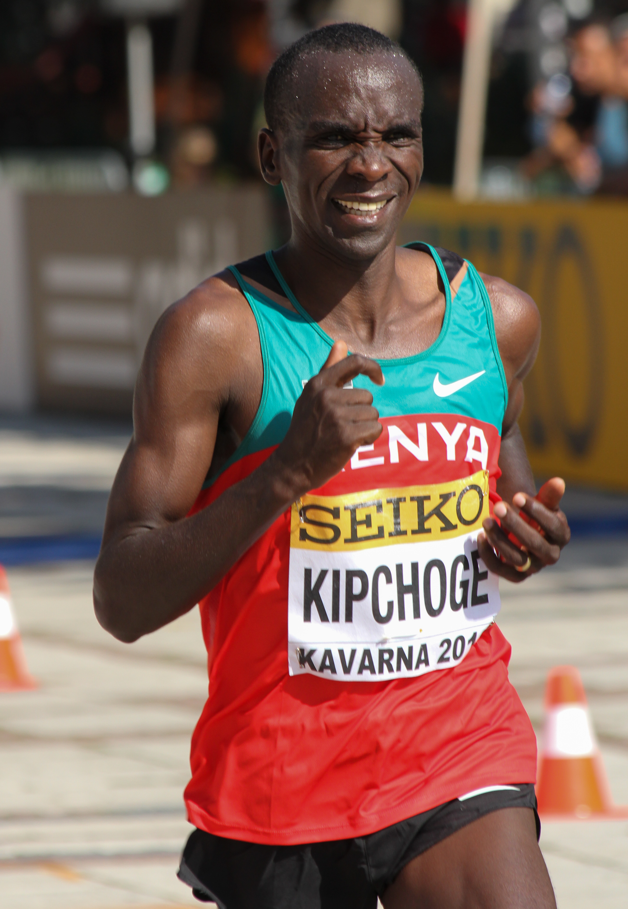

Eliud Kipchoge, Long distance Marathon runner:
fig: Eliud running the NYC marathon:
About:
Eliud Kipchoge (born 5 November 1984) is a Kenyan professional long-distance runner who competes in the marathon and formerly competed at the 5000 metre distance. He is the 2016 and 2020 Olympic marathon winner. In addition, he set the world record in the marathon with a time of 2:01:39 at the 2018 Berlin Marathon. His run broke the previous world record by 1 minute and 18 seconds.[2] He is widely regarded as the greatest marathon runner and one of the greatest sportsmen in history.
Eliud Kipchoge competes in the marathon and formerly competed at the 5000 metre distance. He is the 2016 and 2020 Olympic marathon winner. In addition, he set the world record in the marathon with a time of 2:01:39 at the 2018 Berlin Marathon.
Tribute